For the last two years Dibya and Ayan kept on complaining to me that I am not enthusiastic enough to organize a big vacation trip. So, one evening we were cooking in Ayan’s home, Dibya proposed this idea of booking the flight tickets to Greece before even chalking out the whole plan. I was drunk and intoxicated, so Dibya took the full advantage of it. Just kidding! We discussed and chose the time to be in the end of September because of following reasons
- expected to be less crowded
- expected to be optimum warm/weather
Oh! by the way I forgot to mention Sanju. He was also in this trip with us. He is the final member of this group that converted the trio to quad. And the only significance that he did to the group is to enable us to play the 29 card game (গোলাম যেখানে রাজা) in the trip. He will become the Maharaj of the trip later.
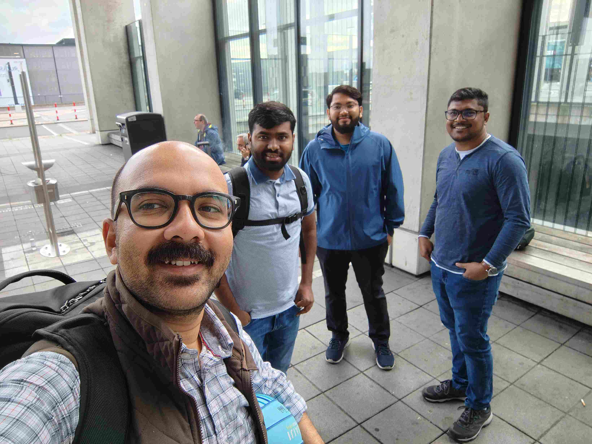
Santorini
We landed in Santorini on 25 Sep where our destination was a place called Kamari. Initially it looked like an oasis town. I have never been to Israel or Palestine. But from the pictures that I saw on instagram about it and when I saw it in person, it felt like I am in Israel or Palestine. It was a very rough and crude and dry landscape.
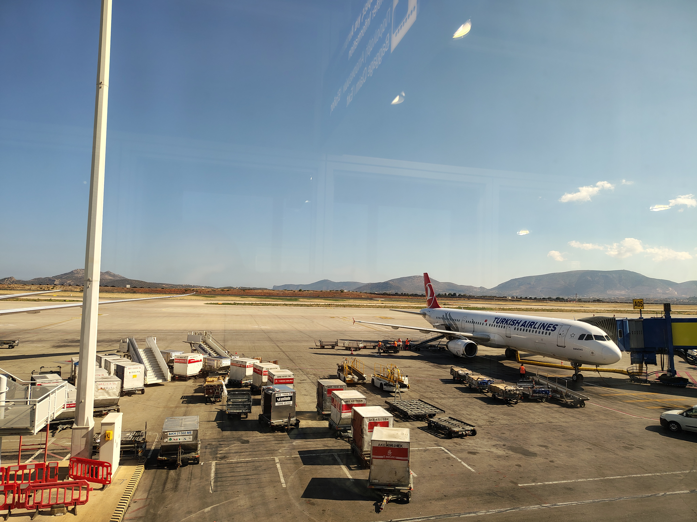

I was extremely tired and I also had a very mild sore throat from Berlin. Eventually I was neither enjoying or feeling good about the trip. And then we were so hungry that we chose a random restaurant/grill-house which had 4.4 stars rating in Google reviews. The restaurant was called Happy Grill.
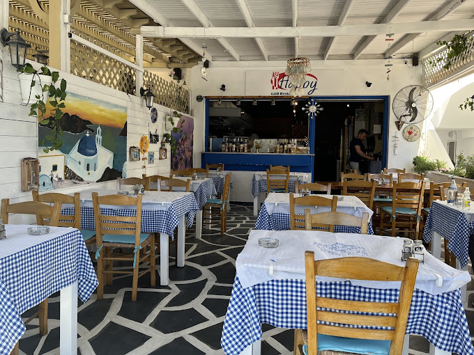
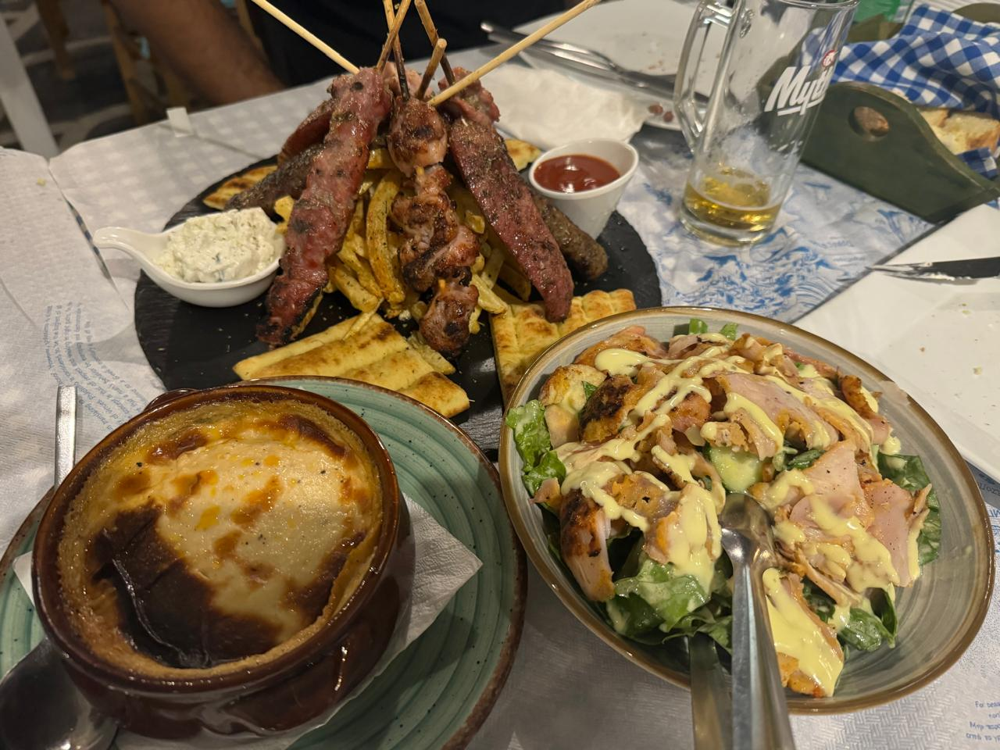
Food at Kamari
We took the following dishes from here
- Grill platter for 2
- Moussaka
- Caesar’s salad
the feeling of the people for the food was actually bad. The grill platter was very dry, the moussaka was a disaster, and in my salad, the chicken was not well-grilled and has extreme amount of salad-dressing. So overall, not recommended at all.
Water of Santorini
As a part of my new routine, I woke up early at 5 am for 3 km jogging. It was so good and refreshing to run beside the beach with cool sea-breeze touching my face. The best part of it was when I entered the personal jacuzzi that we had in the roof of the hotel we were staying.
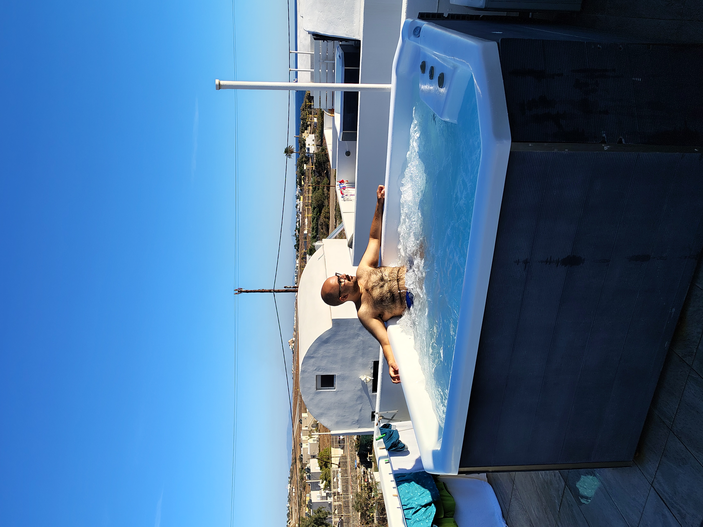
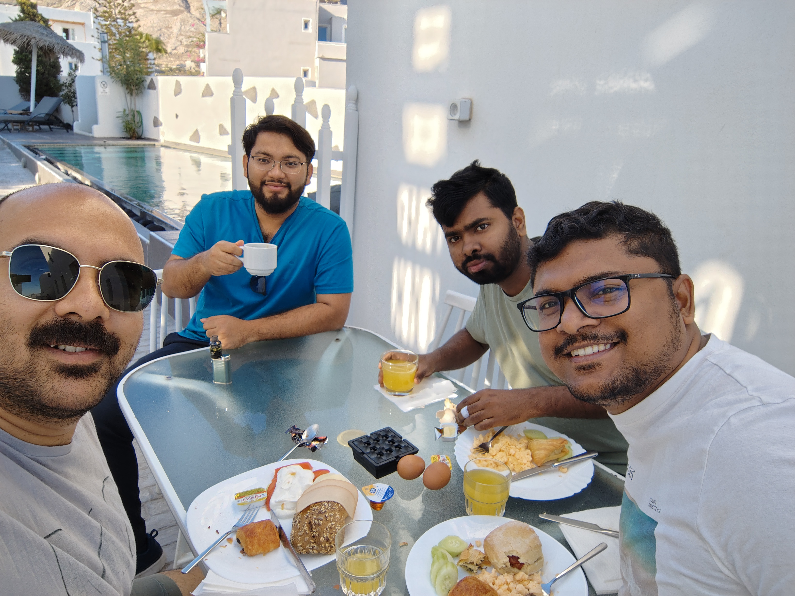
But then I found out that the beach of Kamari is very rocky, so we figured out that it is unswimmable. So next day which is on 26th September, we took a small boat ride to Perrisa where the beach was sandy. So we went there. For the first time in my life I found the most clear seawater although it was extremely salty too.
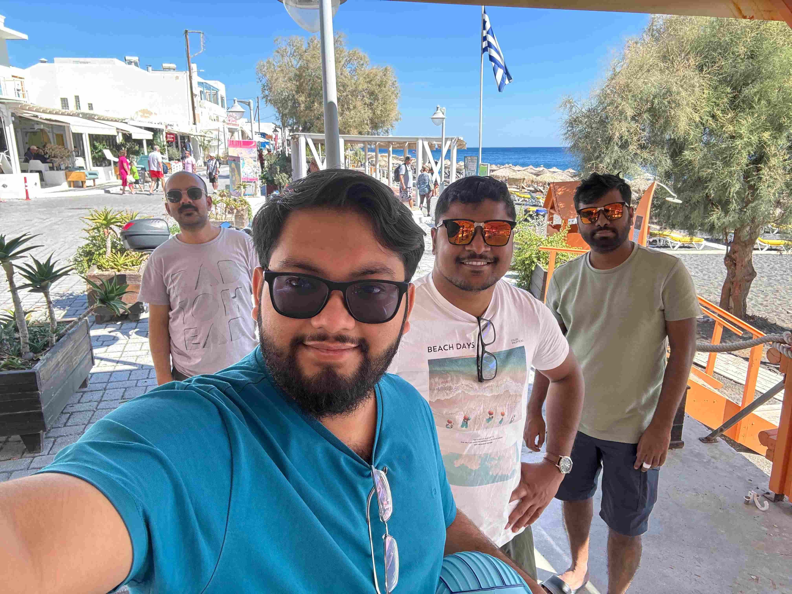
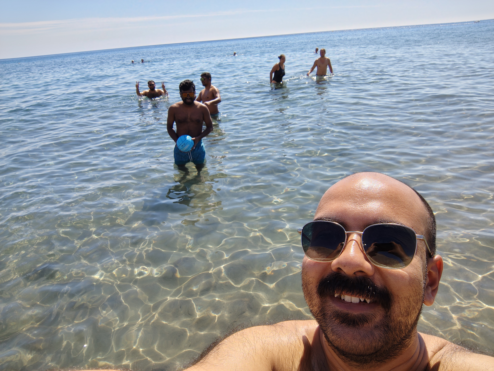
After the swimming, nobody knew that we are going to take the most daring thing for the trip. So, Dibya has made an international driving permit and we rented a car to travel to Oia. Oia is the most instagrammy place in Santorini. Most of the pictures related to Greece that you will see in the internet is actually shot at Oia. So we drove to Oia, in a nutshell Dibya surprisingly drove us smooth although we were all a bit scared. We reached finally to see the sunset at Oia and also to eat at the famous gyros food store of Santorini - Pitogyros.
Capitalistic Oia and Taste of Pitogyros
I did not feel anything special about Oia except the white hotels and homes on the sides of the mountain. It has very artificial vibes, as if everything is made perfect for photos. It felt like a place for the rich people to shop and stay. So, I would rather describe how the experience in Pitogyros was. Because after a horrible experience in Kamari food last night, we wanted definitely to have good food. We ordered

- Pork Gyros Plate
- Chicken Gyros Plate
- Chicken Souvlaki
- Soutzoukakia (Ground Beef Grill)
Here I present you the juicy and delicious Greek delicacies XD

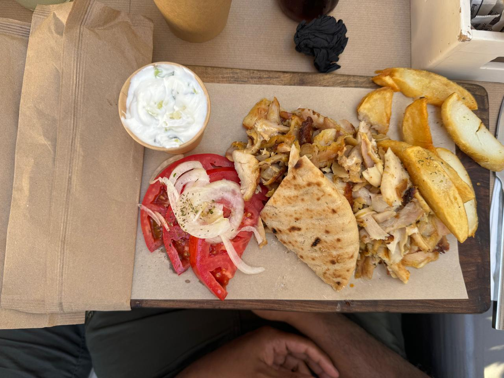
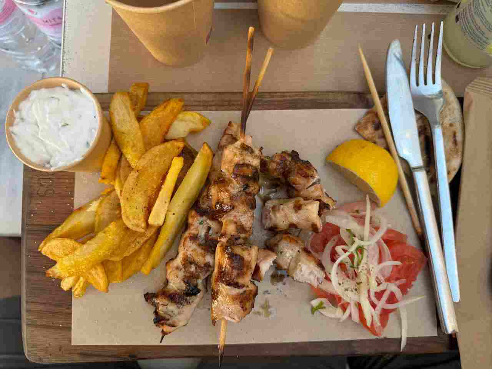

Review : All of the dishes was amazing, my personal recommendation would be Pork Gyros plate, Chicken Souvlaki, and Soutzoukakia. My chicken souvlaki tastes a bit like reshmi kabab if you are familiar with Mughlai cuisine. The soutzoukakia was very tender, almost melting inside mouth. Pork Gyros was also very fatty but I would still go for Döner Kebab everytime. From my side if you are in Santorini, a must try place.
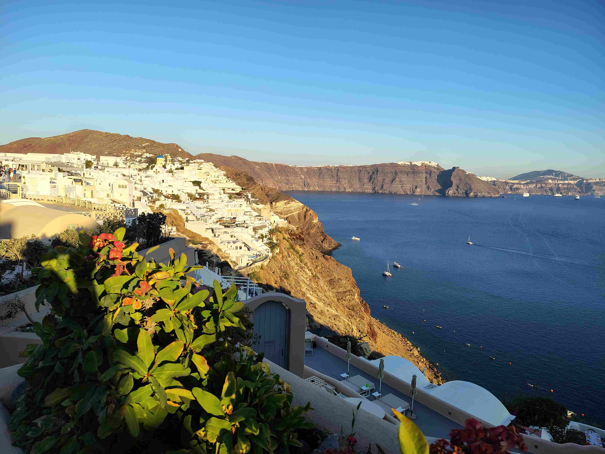

So after seeing the sunset which is in my opinion extremely overrated. We started returning to our hotel. And we were all very tired and I was feeling a bit ill with fever. I slept as soon as I reached the hotel. The boys stayed awake and had fun at night which I am completely unaware of and even if I know I do not want to reveal the truth. So next destination in the morning was Naxos. But before that see the গাঁয়ের ছেলে গোবিন্দ here.
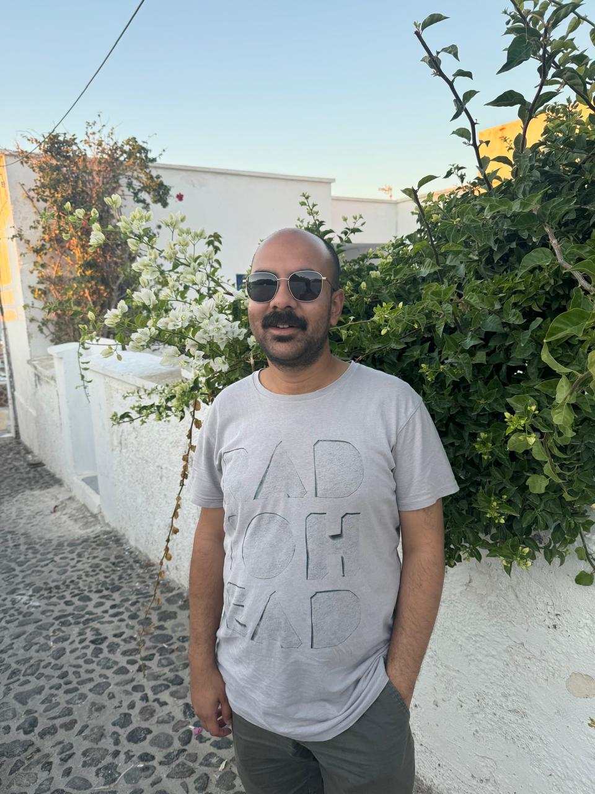
Mission Naxos
Motion Sickness
I have very strong motion sickness. Hence, from the very beginning of the trip I was a bit skeptical about the ferry trips that we would be having in between islands. And the first of that was from Santorini to Naxos, our second destination. Surprisingly the weather was very calm, and the boat was lavish and giant. So, I could not even feel the vibrations from the ocean waves at all. It was a very comfotable journey. Although we had reserved seats, we spent most of our time on the deck practising and playing 29 card game. This game was a new addition to our group activities.
The ferry trip was very relaxing to me I repeat.


Naxos was amazing
Finally we reached Naxos and we reached the villa we booked at Naxos village hotel. The villa was lavish and grand and peaceful with a very beautiful swimming pool. We were excited about Naxos more than other destinations from the beginning of the trip. The major reason for this was many of our colleagues from University advised and gave recommendations related to Naxos food scene. Being a group of Bengalis we are only interested in one thing - food. Anyways we can start one by one to mention the food scenes of Naxos. Some were really good, some were extremely bad and some were average.
To Elliniko
To Elliniko was suggested by Ayan’s friend from Marseilles. This was by far the best place for Greek cuisine from my perspective in the whole trip. We went there twice. We ate there
- Moussaka
- Kleftiko
- Meat Balls with rice/fries
- Baby goat
- Bean salad
- Fava
- on the house Orange cake
- Fried Feta with honey


All of them were amazing. No doubt. I would recommend anyone to try all of them. Although we shared everything but I personally took ‘kleftiko’, so I can tell some more about it. It is a lamb stewed dish where carrots, garlic, onions, tomatoes, potatoes and lamb shank is put into a earthen small pot and convered with a paper and a string. Then the whole thing is slow roasted in oven for long time. The taste was 10 on 10. The meat was very tender. As I was on a very strict meal routine due to health issues. But this is the day where I cheated and ate red meat. As compensation I had to pay my girlfriend 10 Euros. Also since here I became a huge fan of the orange cake in general. All the other dishes were also good. And if you are a Bengali and you are thinking ‘baby goat’ would be same as ‘mutton’ or khasi(write in bengali), you are being mistaken. All the goat dishes have gamy flavour and mildly intense.
Boulamatsis
The next day I went for a morning walk as usual and then swam in the swimming pool. But for the lunch we went to a family run restaurant called Boulamatsis. I find it very cute. The reason is that it is run by a mother with her two sons. And it is basically like a canteen.

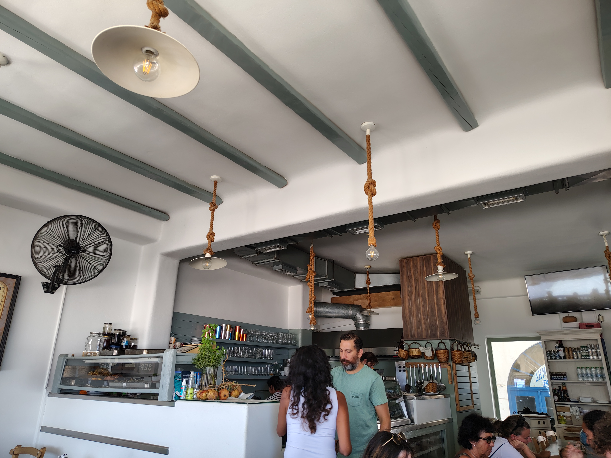
We ate
- Grilled Sea Bass
- Greek Salad with feta
- Meat ball spaghetti
- goat with pasta


I took the sea bass fish, it was so fulfilling and comfort food. The fish was fresh. Also the salad was amazing. Here we tried the first salad in Greece. Although my group were neither so much enthusiastic nor has a liking towards it. But after this, at least everyone joined me in the Greek salads wherever we went except Sanjay.
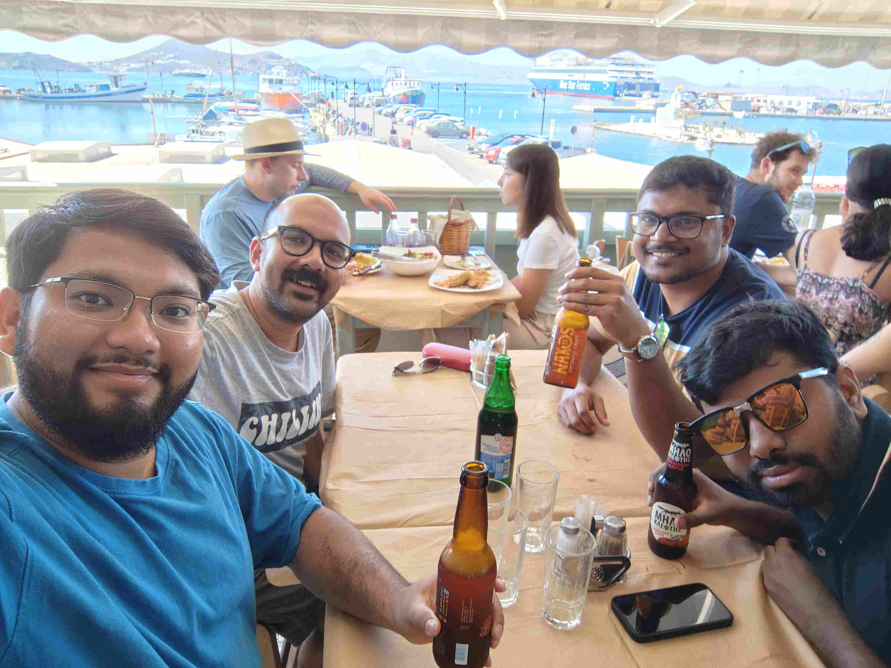
After the boulamatsis and its good food, we decided to play 29 card game in a bar where I ordered fruit salad with yoghurt and honey. And I got so hooked into it that I decided that it is going to be sometimes dinner when I am back in Berlin. It has not become a reality yet but soon.
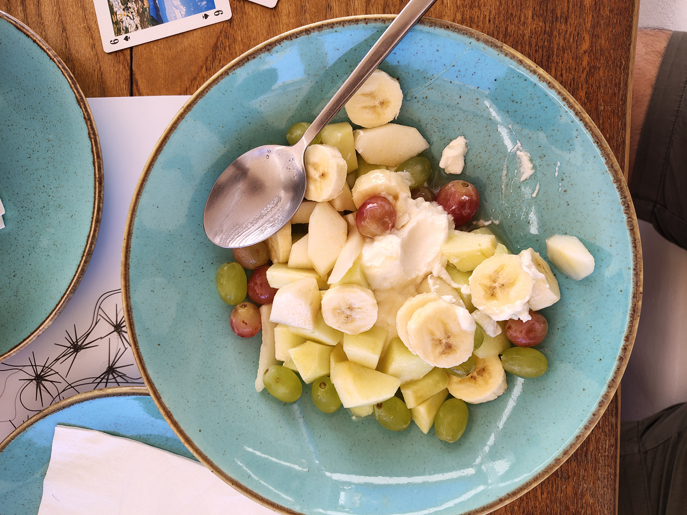
Apanemi
Coming back to hotel we decided to play 29 game with betting. The bet was the team that loses the game has to sponsor the dinner for the winning team. Me and Dibya fought until the last game but we lost. And then we chose to go a sea-food restaurant called Apanemi. It was a disaster. We order multiple fish item. As Dibya does not like fish, he ordered a rib steak and later on sausages, as he could not eat that extremely dry steak. The sea food was also really shit. I cannot find a good word for it sorry. So we complained and the manager gave a discount. The only thing that was actually tasty was the salad with Naxian cheese which is also a goat cheese but a bit creamier and runny. I can only recommend that but nothing else. But still I am sharing one picture from the food pallete. It might look delicious but it is not.
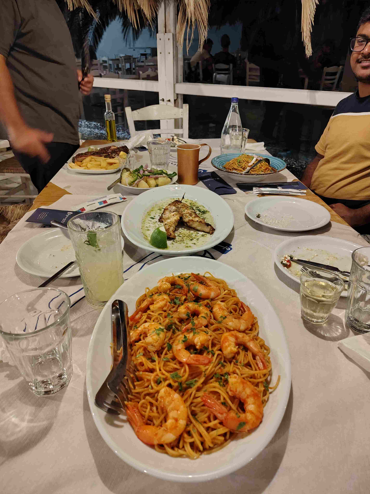
Swimming and Gyros again
We went to the beach of Naxos and as usual I have no words how to describe the water of the sea there. It was very clear and greenish like the retina color of an Azerbaijani woman. After the swim a gyros is must. I also ate yoghurt with honey there.
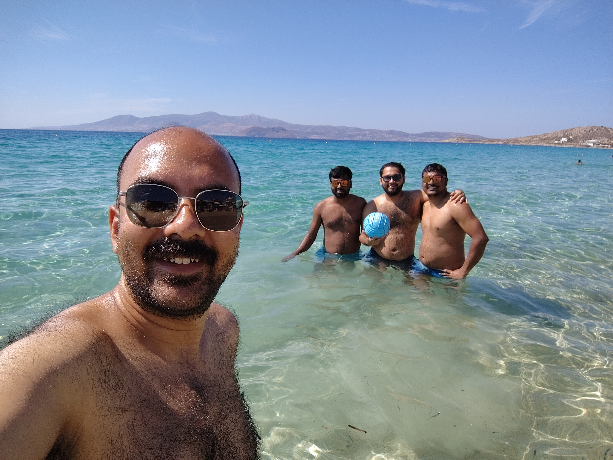

By the way until this moment Ayan got completely fed up with gyros and greek food.
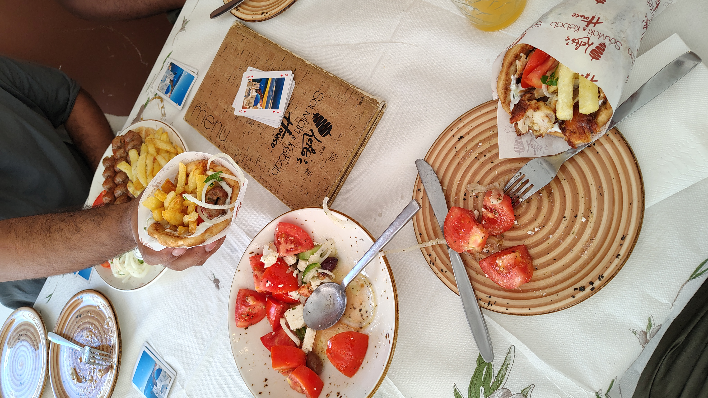
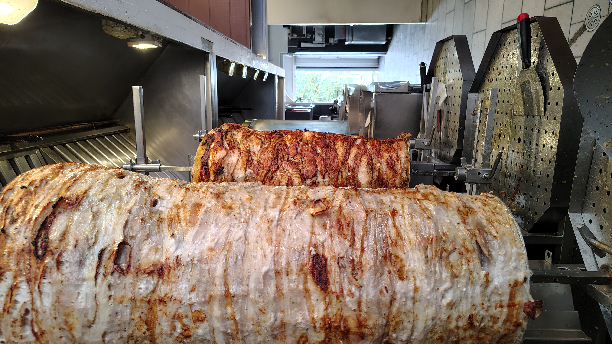
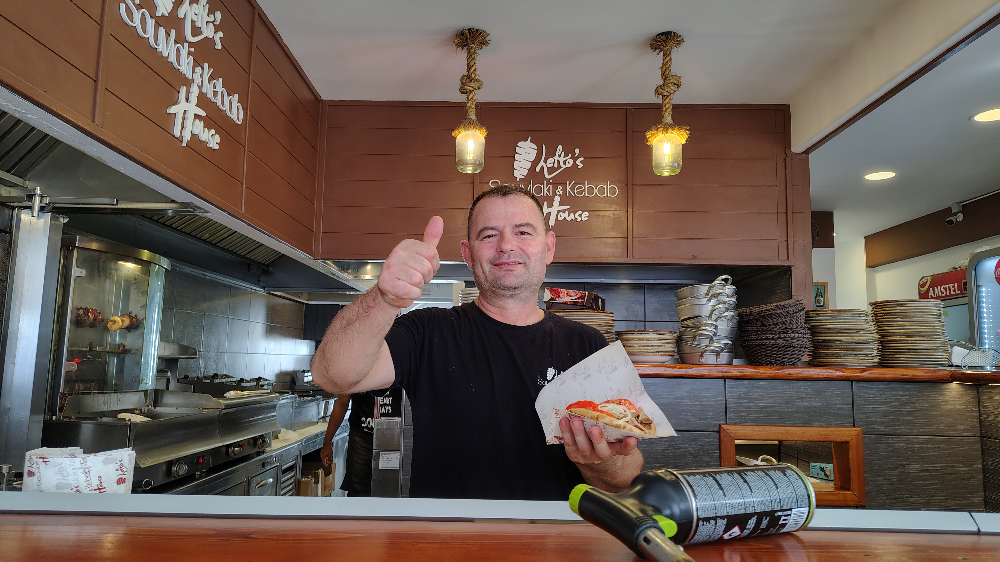
The night we had a great conversation about life, religion, society and ‘Moksha’. We cherished the last night at Naxos and the fresh cool breeze too. It was a very calm and mystic night. Next morning time to go to our last destination Mykonos island.

Mykonos Mission
Did I already tell you about my sea sickness? I was about to go to Mykonos and I took a small boat. After the experience from the last ferry I was cvery confident about this time too. But “OH! MY GOD” I would never ever going to risk a boat ride. the weather was bad, stormy and the boat had to return to Naxos again. That was a relief, because we got a big ship the next time. So it was less painful.

We reached mykonos where we had basically nothing to do but just chill. The stay was actually good.
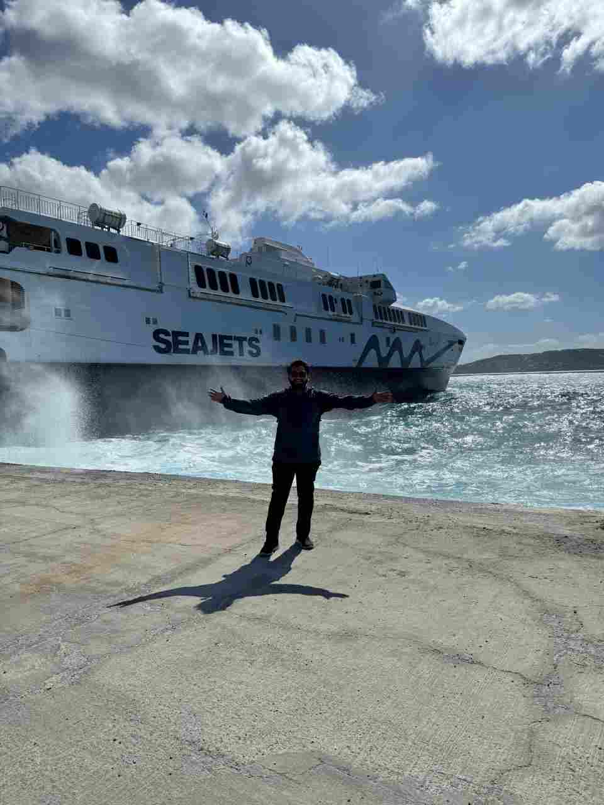
The overall review about Mykonos is that it is a rich people’s place and I would not recommend anyone to go there to have fun. We ate a lot of cakes there. And that’s it we finished the Greece trip.
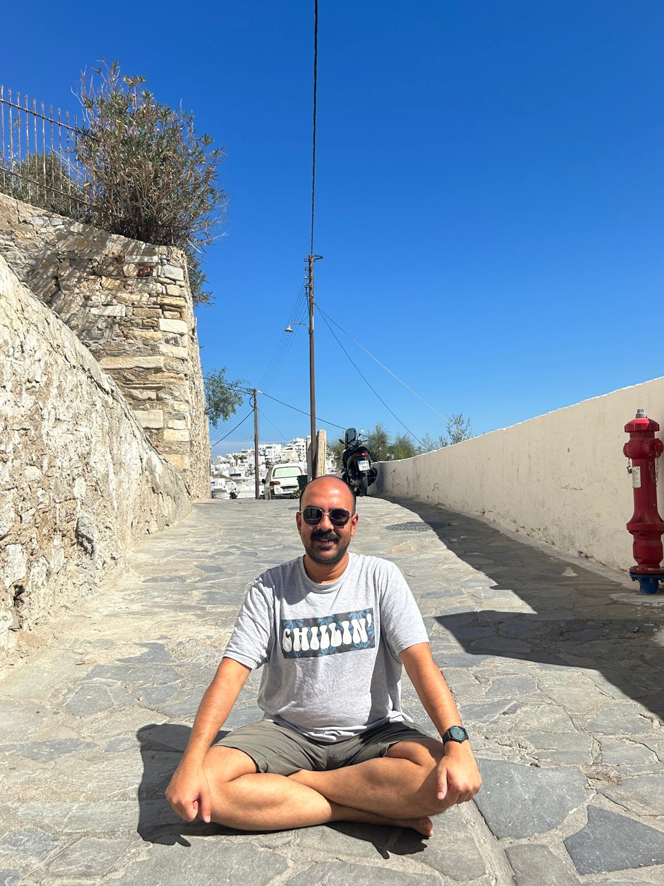
The Greece trip is tiring, started with fever, salty water, good food and bad food, emotional word sharing, quarrels, philosophy sharing but most importantly it was brotherly and relaxing.
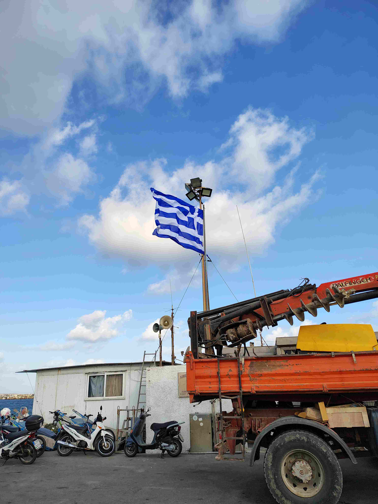